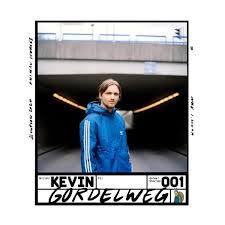
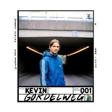

Mijn naam is Justin Saaman, ik ben 20 jaar oud en kom uit Vlissingen. In mijn vrije tijd game ik graag, voetbal ik en ben ik kok bij een Japans restaurant hier in Vlissingen op het Bellamypark.
Ook ga ik graag met vrienden op stap en houd ik ook wel van een drankje.
Om een beetje aan te kunnen geven hoe ik in elkaar zit heb ik een lijstje met karaktereigenschappen gemaakt.
In mijn vrije tijd houd ik mij ook vooral bezig met muziek, voor het kijken van een film of serie heb ik de concentratie niet. Maar 3 of 4 minuten naar een nummer luisteren is precies lang genoeg voor mij, dus hieronder heb ik een paar van mijn favoriete nummers van dit moment.